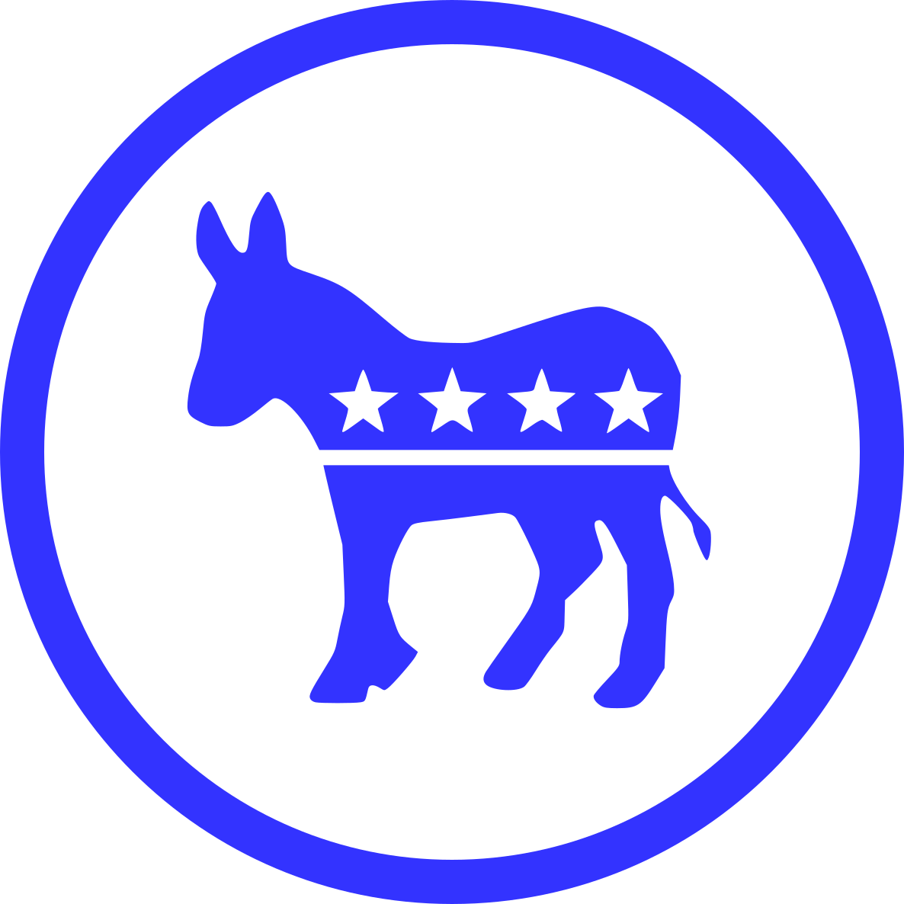

Brand Style Guide · 2026 · Georgia Peach & Clay
Vote GA
Informing the Electorate
Visual standards, color system, typography, and UI patterns for the VoteGA civic information platform.
votega.org · Georgia Voter Information
Contents
01 Mission & Voice
02 Logo & Identity
03 Color System
04 Typography
05 Badges & Labels
06 Buttons & Controls
07 Cards & Callouts
08 Data Display
09 Party Color System
10 Spacing & Layout
11 Iconography
12 Data Visualization
13 Content & Data States
14 Social & Share Cards
15 Legal & Attribution
16 Layout & Breakpoints
17 Page Anatomy
18 Hub & Results Pages
19 Open Items
VoteGA Brand Style Guidevotega.org · Informing the Electorate
01 — Mission & Voice
Informing the Electorate
VoteGA is a nonpartisan civic information resource for Georgia voters. The brand should feel authoritative, transparent, and accessible — like a trusted local newspaper, not a political campaign.
“Informing the electorate.”
VoteGA tagline — short, neutral, and purposefulVoice (Do)Factual and precise. Uses plain language. Acknowledges data gaps honestly. Explains API limitations clearly. Cites sources. Never editorializes on candidates.
AvoidPartisan framing. Emotional language around political figures. Promoting one party’s positions. Hiding data quality caveats. Making unsupported claims.
02 — Logo & Identity
Logo Usage
The mark is Georgia’s outline in a round badge, built from US Census boundary data. The wordmark pairs ‘Vote’ and ‘GA’ — Georgia’s postal abbreviation doubles as a call to action.
Light / warm background — primary usage (Tier 1)
Navbar / footer (#f4ebe0) | Element | Specification |
|---|
| Logo file | Current site file is /assets/img/logo.png (red/blue, still to be swapped). The outlined SVG and PNG set of the marks shown here is in assets/img/brand/logo/. |
| Mark | Georgia outline in a round badge, set before the wordmark. See the Logo System page. |
| Placement | Top-left navbar, replaces title text via title-img |
| Domain | votega.org — lowercase, no hyphen |
Page 2
VoteGA Brand Style Guidevotega.org · Informing the Electorate
02 — Logo & Identity
Logo System: Tiers & Usage
One identity, two sets. The Georgia set is the primary identity; the peach set is an alternate for warmer, more expressive uses. Georgia says where; the peach says who and how it feels.
Tier 1 · Primary
With tagline: headers, documents, OG image, anywhere over about 320px wide.No tagline: the same Tier 1 logo for the navbar and small sizes, where the tagline would be unreadable.Tier 2 · Stacked
Use only when horizontal space is short: square crops, posters, narrow columns.Alternate set · Peach
Avatars, merch, stickers, campaigns, slogans.
Which mark where
| Context | Mark |
|---|
| Browser tab, bookmarks, favicon, PWA / touch icons | Georgia favicon |
| Site header, documents, reports, OG image | Georgia, Tier 1 (Tier 2 if narrow) |
| Social avatars and profile images | Peach set |
| Merch, stickers, print, campaigns, slogans | Peach set |
Rules
Do. Pick one set per placement. Clear space around the logo equals a quarter of the badge diameter. Drop the tagline under about 320px wide. Use the favicon (Georgia) for every small icon.
Don’t. Mix a Georgia badge and a peach in one lockup. Use the peach as a favicon (the leaf is lost at 16px). Recolor to blue or red, or place on a background that drops the 3:1 contrast.
Minimum sizes and clear space are proposed values; confirm them in real use before they are treated as fixed.
Page 3
VoteGA Brand Style Guidevotega.org · Informing the Electorate
03 — Color System
Core Palette: Georgia Peach & Clay
The palette is built around a warm clay brand color, a deep clay for interactive states, and a pine accent. It deliberately contains no blue and no red, so the brand never collides with party colors. Party colors are semantic, not brand — they encode political affiliation and must not be used decoratively. Contrast ratios are measured against the page background.
Primary brand colors
Ink#2b2118Body text, headings15.2:1 on page Brand Clay#b4521fAccents, focus ring, tab underline4.9:1 on page Deep Clay#8a3b12Buttons, active states, hover7.5:1 on page Link#9a4214Text links6.4:1 on page Pine#2f5d50Secondary accent, authorization badge7.2:1 on page Background & surface
Page#fffaf4Page background Clay Tint#fbefe4Hover rows, banners, badge BG Navbar / Footer#f4ebe0Navbar, footer surfaces Clay Line#e6c9b0Borders, dividers, inputs Nav Border#e6d8c6Navbar bottom border Pine Tint#e3eeeaPine badge / card BG Semantic status colors
Success Green#15803dConfirmed, certified4.8:1 on page Danger Red#b91c1cErrors, emergencies6.2:1 on page Warning Amber#806000Cautions, data notes5.6:1 on page Neutral Gray#6b7280Meta text, disabled4.7:1 on page Contrast notes. Brand Clay on Clay Tint is just under AA (4.46:1) — use Deep Clay for text on tints (badges, banners). White on Brand Clay is 5.0:1 and passes AA. Warning Amber is a golden brown, kept apart from the clay family, and is still always paired with a label or icon: under some color-blind vision dark browns converge, so color alone never carries the meaning.
Dark mode: not in this release. Build every color as a token named by its role (surface, text, border, accent, link, party), layered over the palette values above, and keep raw hex out of components. A dark theme can then be added later by overriding the role tokens, not by editing pages. The logo set already includes reversed versions for dark grounds; the peach set is light-ground only.
Page 4
VoteGA Brand Style Guidevotega.org · Informing the Electorate
04 — Typography
Type Scale
VoteGA uses Public Sans for everything — headings and body — loaded from Google Fonts, with an explicit monospace stack for IDs, order numbers and code: ui-monospace, 'SF Mono', Consolas, 'Liberation Mono', monospace. Never rely on the bare monospace keyword, which resolves to a different face on every OS. Public Sans is also the face of the VoteGA wordmark, so type and logo share one voice. Hierarchy comes from weight and size, not from a second family.
| Style | Example |
|---|
| H1 — Page Title · Public Sans Bold, 20–24pt | Legislative Member Details |
| H2 — Section Heading · Public Sans Bold, 16pt | Georgia Executive Offices |
| H3 — Sub-heading · Public Sans Bold, 11pt | Voting History · 119th Congress |
| Body · Public Sans Regular, 9–10pt, leading 14 | Figures reflect the candidate’s most recent filing and are updated as new reports are submitted to the FEC. |
| Small / Meta · 7–8pt, #6b7280 | Data updated daily · Source: Congress.gov API · Last sync: October 2026 |
| Monospace · 8–8.5pt, IDs and order numbers | Order 10.08.26.01 · BioGuide ID K000394 |
| Category Label · Public Sans Bold 6.5pt, uppercase, tracked | STATE OF GEORGIA · 2026 ELECTION CYCLE · CONGRESSIONAL REPRESENTATIVES |
| Link · Public Sans, #9a4214 | gov.georgia.gov 6.4:1 on page |
Page 5
VoteGA Brand Style Guidevotega.org · Informing the Electorate
05 — Badges & Labels
Status & Category Badges
Badges are pill-shaped (border-radius 10–12px), small text, bold weight. They encode meaning through background/foreground color pairs — never use color alone without a text label. Contrast ratio shown beside each badge.
Role badges
Current Officeholder 6.8:1Challenger 9.4:1Open Seat 5.3:1Executive-order categories
State of Emergency 5.5:1Election 5.0:1Suspension 8.2:1Appointment 6.8:1Authorization 6.3:1Flag at Half-Staff 8.5:1Other 6.8:1Party & seat badges (semantic)
Democratic 5.6:1Republican 4.6:1Independent 5.2:1Vacant 9.4:1Page 6
VoteGA Brand Style Guidevotega.org · Informing the Electorate
06 — Buttons & Controls
Buttons, Filters & Tabs
Primary actions use Deep Clay with white text (7.7:1). Focus is always a 3px Brand Clay outline with a 2px offset — never remove it.
Buttons
Find my districtsClear lookupFocused
Filter & year buttons
All (318)Appointment (257)Hover state
20262025
Tabs
GA State SenateGA House of Representatives
Inputs
123 Peachtree St NE, Atlanta, GA 30303 — or just 30303
Page 7
VoteGA Brand Style Guidevotega.org · Informing the Electorate
07 — Cards & Callouts
Candidate Cards & Callout Banners
Cards communicate role. Callout banners communicate contextual status with a 4px left border. Accent colors are non-partisan; only the party badge carries party color.
Candidate cards
Current Officeholder
Sen. Jon Ossoff
D Georgia · U.S. Senate
Challenger
Candidate Name
R Georgia · U.S. Senate
Callout banners
Primary ResultThis seat advances to the General Election on November 3, 2026.
Open SeatThe current officeholder is not seeking re-election to this seat.
Running for Re-ElectionThis member has filed to run for the same seat in 2026.
Data NoteMember data not found. Verify the memberId matches the data file.
Page 8
VoteGA Brand Style Guidevotega.org · Informing the Electorate
08 — Data Display
Finance Cards & Data Tables
Financial summary cards use tinted backgrounds to encode meaning at a glance. Tables use minimal styling — subtle header, light row borders, and a Clay Tint row hover.
Campaign finance summary cards
RAISED$2.4M
SPENT$1.1M
CASH ON HAND$1.3M
Data table (executive orders example)
| Date | Order # | Title | Category |
|---|
| Oct 8, 2026 | 10.08.26.01 | Declaring a State of Emergency for Hurricane Isaias | State of Emergency 5.5:1 |
| Oct 6, 2026 | 10.06.26.21 | Reappointing the Honorable Antonio Long to the Georgia Board of Private Detective and Security Agencies (hover row) | Appointment 6.8:1 |
| Oct 6, 2026 | 10.06.26.19 | Reappointing the Honorable Coy Heath Elliott to the Board of Community Supervision | Appointment 6.8:1 |
Page 9
VoteGA Brand Style Guidevotega.org · Informing the Electorate
09 — Party Color System
Political Party Colors
Party colors are semantic, not decorative — they encode political affiliation only, and are the only blues, reds and magentas in content areas. Each party has one color, taken from its own disc: that hue means that party and nothing else, on every page, chart, badge and card. Gray marks a vacant seat, not a party. Never use Democratic blue or Republican red as general accent colors. With the clay brand there is no brand blue, so general UI (links, buttons, tabs, active states) never needs one.
Democratic#3333ffChart, bar, border; the disc Democratic tint#e7e7ffBadge background Republican#e81b23Chart, bar, border; the disc Republican text#cf151cSmall text on its tint Republican tint#fce4e5Badge background Independent#a21cafChart, bar, border, badge text Independent tint#f4e4f5Badge background Vacant#9ca3afCharts, vacant seats Vacant tint#f3f4f6Badge background Party symbols (discs)

Democratic
democratic-disc.svg
Republican
republican-disc.svg
Usage
- Identify, never decorate. Use a disc only to mark a party affiliation, next to a party label (“D”, “Democratic”) — never as ornament or in the VoteGA logo.
- Always in pairs, same size. Where one party’s disc appears, show the other’s alongside at identical size and weight. Independent has no disc: use its magenta text badge. Vacant seats use gray.
- Use the artwork as supplied. Don’t recolor, outline, crop, rotate or add effects. Both are self-contained discs with a white field, so they sit on any background.
- Size (proposed). 16px minimum, since detail is lost below that; about 20–24px inline with text, 40–80px on cards.
- The discs are the party colors. The artwork and the palette are the same hues, so a disc, a badge and a chart bar for one party always match. The one adjustment: Republican red is 3.7:1 on its tint, so small badge text uses the darker text shade (4.6:1).
- Not an endorsement. The discs are party marks. State that data is nonpartisan where they appear in prominent positions, and never place one beside editorial content.
Correct useUse Democratic blue on charts and candidate cards representing Democratic candidates. Apply party colors consistently and symmetrically across both parties.
Incorrect useDon’t use Democratic blue for non-party UI such as links, buttons or tabs — those use the clay family. Don’t use Republican red as a general ‘danger’ or ‘error’ color; reserve Danger Red for errors and emergencies, and always pair it with a text label or icon.
Page 10
VoteGA Brand Style Guidevotega.org · Informing the Electorate
10 — Spacing & Layout
Spacing Tokens & Layout
The layout uses a single-column content area with a sticky sidebar on member detail pages.
| Token | Value | Used for |
|---|
| xs | 0.25rem / 4px | Gap between badge and icon |
| sm | 0.5rem / 8px | Gap between filter buttons |
| md | 1rem / 16px | Card padding, section gaps |
| lg | 1.25–1.5rem | Between sections |
| xl | 2rem | Section separators, page margins |
| Token | Value | Used for |
|---|
| Radius sm | 4px | Year buttons |
| Radius md | 6–8px | Cards, callouts |
| Radius pill | 10–20px | Filter buttons, badges |
| Avatar | 80 / 140px | Cards / detail pages |
| Sidebar | 240px | State member sidebar |
| Breakpoint | 600–700px | Stack to single column |
Left-border accent system (4px)
Incumbent
#b4521f
Challenger
#9ca3af
Primary result
#2f5d50
Open seat
#806000
Implementation
Tokens live in assets/css/brand-peach.css (trial; loaded per page via front matter css:). Page background, text, link, hover, navbar and footer use the theme variables --page-col, --text-col, --link-col, --hover-col, --navbar-col, --footer-col.
Page 11
VoteGA Brand Style Guidevotega.org · Informing the Electorate
11 — Iconography
Icon System
Pragmatic and structured. One family — Font Awesome 6 Free, solid, already loaded site-wide — plus the party discs for affiliation and a single Unicode star for the current officeholder. Each icon has one meaning, so the same idea always looks the same across the site.
Role & status
★
Current OfficeholderKept as the text glyph in the role badge; inherits the badge colorU+2605 (text)
CandidatesA field of candidates in a racefa-people-group
Open SeatOfficeholder is not seeking re-electionfa-door-open
Vacant SeatSeat currently unfilledfa-chair
Filed / QualifiedCandidate has qualified for the ballotfa-user-check
CertifiedResults certifiedfa-circle-checkVoting & elections
Vote / BallotCasting or recording a vote; the ballot iconfa-check-to-slot
Polling PlaceWhere to vote in personfa-person-booth
Absentee / MailMail and absentee ballotsfa-envelope-open-text
Election DateElection days and deadlinesfa-calendar-days
Voter IDID requirementsfa-id-card
RegistrationRegistering and checking statusfa-clipboard-check
Your DistrictAddress and district lookupfa-map-location-dot
Contests / MeasuresRaces and ballot measures on a ballotfa-list-check
ResultsVote totals and resultsfa-square-poll-vertical
Unofficial / PendingResults not yet certifiedfa-hourglass-halfAbout ballot icons. Font Awesome’s literal ballot-paper and ballot-box icons are Pro-only, so check-to-slot (a check-marked ballot dropping into a slot) is the free equivalent and is the one ballot icon on the site. Don’t substitute the ballot-box emoji: it renders differently on every OS. If a literal ballot illustration is wanted later, it would be a commissioned custom set, not a one-off.
Page 12
VoteGA Brand Style Guidevotega.org · Informing the Electorate
11 — Iconography
Government, Functional & Rules
Government & records
Government / CapitolOffices, the executive branch, the Capitolfa-landmark
Legislature & BillsGeneral Assembly, bills, votesfa-gavel
Courts & JusticeJudicial branch, rulingsfa-scale-balanced
DocumentBills, filings, official textfa-file-lines
Executive OrderOrders, signed actionsfa-file-signature
Campaign FinanceRaised, spent, donorsfa-sack-dollar
NewsCoverage and pressfa-newspaper
Flag at Half-StaffObservances and noticesfa-flag
Emergency / WarningEmergencies; always with a labelfa-triangle-exclamation
Data NoteNotes on data sources and limitsfa-circle-infoFunctional UI
SearchSearch and lookupfa-magnifying-glass
NextNext page or stepfa-arrow-right
PreviousBack / previousfa-arrow-left
EmailContact by emailfa-envelope
PhoneContact by phonefa-phone
ExternalOpens another sitefa-up-right-from-square
Do. Pair every icon with a visible text label — the icon supports the words, never replaces them (mark icons aria-hidden). Size at 1em inline, 16–24px in UI, 32px+ on feature tiles. Default to Ink; use Deep Clay for emphasis, Pine for confirmed states, Danger Red only for emergencies. Add new icons by extending this table, one meaning each.
Don’t. Use two different icons for one idea, or one icon for two. Use a party disc, Democratic blue or Republican red on a non-party icon. Mix outline and solid styles, use emoji, or draw one-off custom icons. Use the star for anything except Current Officeholder.
In context
★ Current Officeholder Election Day: November 3, 2026 Find your polling place Certified results Raised $2.4M
Page 13
VoteGA Brand Style Guidevotega.org · Informing the Electorate
12 — Data Visualization
Charts: Color & Construction
Charts exist to be read, so they follow two rules: party colors mean party and nothing else, and every number is visible as text, never only as a shape. Examples on this page use illustrative data, not real figures.
Party series (semantic)
Democratic#3333ffParty color Republican#e81b23Party color Independent#a21cafParty color Only for series that are parties. Order is always Democratic, Republican, Independent, Vacant.
Non-party categories (up to 4 + rest)
Clay#b4521fSeries 14.9:1 on page Pine#2f5d50Series 27.2:1 on page Slate#5b6470Series 35.8:1 on page Ochre#b7791fSeries 43.5:1 on page Clay Line#e6c9b0Other / rest For anything that isn’t a party: finance categories, branches, topics. No blue, red or magenta.
Sequential ramp (magnitude, e.g. district maps by turnout or dollars)
Examples
Chamber composition
Democratic 20Republican 30Independent 2Vacant 4
Illustrative data
Share of a whole
Democratic 20Republican 32Vacant 4
Illustrative data
Campaign finance
Raised$2.4MSpent$1.1MCash on hand$1.3M
Illustrative data
Page 14
VoteGA Brand Style Guidevotega.org · Informing the Electorate
12 — Data Visualization
Choosing & Building a Chart
Which form
| Question | Use |
|---|
| Look up exact values | Table (the default for most data) |
| Compare a few items | Horizontal bars, zero baseline |
| Composition of a whole (seats, votes) | Single stacked bar; donut only for up to 4 parts |
| Change over time | Line, labeled at the ends |
| Geography (districts) | Map, party fills or sequential ramp |
Construction
| Element | Rule |
|---|
| Labels | Label directly on or beside marks; legends only when direct labels don’t fit |
| Numbers | Every value shown as text, formatted as elsewhere ($2.4M, 1,234) |
| Baseline | Bars start at zero. No truncated axes |
| Segments | 2px gap in the page color between adjacent segments |
| Source | Data stamp under every chart: “Data last updated … Source …” |
Accessibility. Graphical marks need 3:1 against their background. Party is always also named in text (never hue alone), because blue, red and magenta can blur for some readers. Adjacent series differ in lightness, not only hue. Every chart has a text equivalent: a nearby table, or an aria-label that states the numbers.
Don’t. Use party colors for non-party data, or red/green for good/bad. No 3D, no pies over 4 slices, no dual axes, no gradients or shadows, no decorative animation. Don’t imply a trend from two points.
Missing, zero and unknown
Zero
A real zero draws no bar but prints $0 or 0. It is a finding.
Unknown
Not reported or not matched: print — or “Not available” with a gray hatched track. Never draw it as zero.
Partial
If a series covers only part of the period, say which part in a data note beneath the chart.
Page 15
VoteGA Brand Style Guidevotega.org · Informing the Electorate
13 — Content & Data-State Patterns
Editorial Conventions
What the site says, and how it writes numbers, dates and gaps. Where code already enforces a convention it is named, so the guide and the site stay one source of truth.
| Topic | Standard | Example |
|---|
| Party names | Use the party adjective: Democratic, Republican, Independent. Abbreviate to D / R / I only beside a legend or in tight tables. Never “Democrat Party”; never “Rep.” for Republican, since it is the title for Representative. | Democratic · D
Republican · R |
| Titles | Sen. and Rep. before names in lists; full title on first mention in prose. | Sen. Jon Ossoff |
| Role words | Describe the position, not the person. “Current Officeholder”, “Challenger”, “Open Seat”. No adjectives about candidates. | ★ Current Officeholder |
| Claims | Attribute every figure and statement to its source. Say what a record shows, not what it means. | “According to FEC filings…” |
| Dates | Long form in text and stamps. Short form (Oct 8, 2026) only in tables. Never ISO. Date-only values are local calendar dates, so no stamp reads a day early. | October 20, 2026 |
| Money | $ with K / M abbreviations: one decimal for millions, none for thousands, whole dollars below $1,000. Negative with a minus. | $2.4M · $850K · $999 |
| Numbers | Thousands separators from 1,000. Counts as digits. Percentages as whole numbers. | 1,234 votes · 52% |
| Unknown values | An em dash (—) in tables; “Not available” in sentences. Never a blank, never 0 for unknown. | Raised: — |
| Provenance | Every dataset carries its own stamp from its own timestamp: “Data last updated: date · Source: name · Open data”. Link the published dataset, not the internal file. | Data last updated: October 20, 2026 · Source: Congress.gov API |
| Links | Name the destination, not “click here”. External links open in a new tab with the up-right icon. | View on Congress.gov |
Page 16
VoteGA Brand Style Guidevotega.org · Informing the Electorate
13 — Content & Data-State Patterns
When Data Isn’t There
A civic site is judged on how it handles gaps. There are three different situations, and each must read differently. A failure must never look like an empty result: “we couldn’t load it” is not “there is none”.
1 · Empty (a real result)No campaign finance filing found for this candidate in the 2026 cycle.
Neutral gray text. State what was checked and the scope. No apology, no icon needed.
2 · Temporarily unavailableWe couldn’t load this member’s voting record just now. This is a temporary problem on our end, not a sign they have no record. Please reload to try again.
Amber callout. Say it is us, say it is not a finding, give a next step (reload, or a link to the primary source).
3 · Known gapOur vote-matching data has known gaps for a small number of legislators. If this looks wrong, check the member’s official page on legis.ga.gov.
Gray data note. Name the limitation honestly and point to the official source.
Loading & stale
| State | Pattern |
|---|
| Loading | “Loading…” in gray, in the space the content will occupy so the page doesn’t jump. |
| Stale (proposed) | If a dataset is older than its normal refresh, tint the stamp amber and add “older than usual”. Not built yet. |
| User-fixable error | The one place for Danger Red: an unrecognized ZIP or address, with what to change. |
Writing the message
Do. Say what happened, whose side it is, and what to do next, in two sentences or fewer. Plain words. Link to the primary source when there is one.
Don’t. Use “API”, “JSON” or error codes. Blame the reader. Show a bare blank or “0” where the data failed.
Rollout note. The messages above already exist on the site, but their colors vary: “temporarily unavailable” appears in red (#c00) on some pages and in gray or amber on others, and the grays are ad hoc (#777, #666). Standardizing on the three treatments above is a small code change, separate from this guide.
Page 17
VoteGA Brand Style Guidevotega.org · Informing the Electorate
14 — Social & Share Cards
Share Card Templates
A link shared to a group chat or feed is often the first time someone sees VoteGA. Cards follow the same rules as the site: warm ground, the Georgia lockup, one fact, one source. Party color appears only on party badges and data marks, never as the card’s background.
Default card
Pages with no image of their own. Replaces today’s navy-and-blue card.
Entity card (person / race)
CN
Candidate Name
U.S. Senate · Georgia
Democratic★ Current Officeholder
Raised $2.4M · Spent $1.1M
Data last updated: October 20, 2026 · Source: FECVOTEGA.ORG
Legislators, candidates, races. Same layout for every candidate in a race.
Data card (results / composition)
GEORGIA SENATE · ILLUSTRATIVE
56 seats
Democratic 20Republican 30Independent 2Vacant 4
Data last updated: October 20, 2026VOTEGA.ORG
One headline number, one chart, the stamp. Party colors only on the data.
Formats
| Use | Size | Notes |
|---|
| Link card (OG / Twitter) | 1200×630 | Already set to summary_large_image |
| Square post | 1080×1080 | Emblem or data card (proposed) |
| Profile avatar | 400×400 | Round crop; peach set |
| Cover / banner | 1500×500 | Horizontal lockup, left-aligned (proposed) |
Square emblem post and round avatar (peach set) Rules
Do. Keep text inside a 64px margin (platforms crop sides). Nothing under 24px on the 1200px canvas; headline at 48px or more. 4.5:1 text contrast. Include the data stamp and domain. Use portraits only when they come from a government source; otherwise the monogram placeholder. Alt text states the card’s content in a sentence.
Don’t. Use campaign, social-media or stock photos, flag or eagle imagery, party symbols as backgrounds, emoji or partisan hashtags. Don’t color a card by the person’s party. Don’t make two candidates’ cards in the same race differ in layout.
Page 18
VoteGA Brand Style Guidevotega.org · Informing the Electorate
14 — Social & Share Cards
Posting & Implementation
Caption pattern
[What it is] [number or fact], per [source], as of [date].
votega.org/[page]
Example (illustrative). Candidate Name has raised $2.4M and spent $1.1M, per FEC filings, as of October 20, 2026. votega.org/candidates/candidate-name
One fact, attributed and dated, with a link to the page. No adjectives about people or parties.
| Field | Rule |
|---|
| Title | Entity or page name, then the site. Under 60 characters. |
| Description | One factual sentence, under 200 characters, set with share-description. No opinion. |
| Image | Page-specific card, else the default. Set with share-img. |
Voice on social
Do. Same voice as the site: factual, plain, sourced. Correct errors in public and fast, naming what changed. Treat both parties’ accounts and candidates the same: same frequency, same format.
Don’t. React to news with commentary, quote-post a candidate with an opinion, or engage in arguments about who is right. Link the record instead.
Where the current setup stands
Rollout notes. The default card (og-default.png, built from tools/og-image/og-default.html) still uses the old navy, civic blue and action blue with a blue VOTE / blue GA wordmark. Regenerate it from the Peach & Clay template above. Per-page entity cards are not yet generated; they are a larger build and these templates are the design for it. Entity and race cards should reuse the badge and icon rules from this guide.
Page 19
VoteGA Brand Style Guidevotega.org · Informing the Electorate
15 — Legal & Attribution
Licenses, Credit & Provenance
What VoteGA publishes, under what terms, and how it credits what it didn’t make. These summarize the repository’s NOTICE.md and LICENSE; those files govern. This guide is a working reference, not legal advice.
What is licensed how
| Material | License / status | Notes |
|---|
| Site content and published datasets | CC BY-SA 4.0 | Share and adapt, including commercially, with credit; adaptations carry the same license |
| Site source code | PolyForm Noncommercial 1.0.0 | Scripts, JavaScript, templates, workflows |
| Third-party components | Their own licenses | Listed in THIRD-PARTY-NOTICES.md |
| VoteGA name and logo | Reserved, not licensed | Do not use in a way that suggests endorsement |
| Earlier releases | MIT up to tag last-mit-release | Remain available under MIT |
Credit line for reuse
Source: VoteGA.org (https://www.votega.org), CC BY-SA 4.0.
Underlying facts come from public and government sources whose own terms may apply to anything redistributed. Point reusers to /about-the-data and /open-data. Every published dataset repo carries this notice automatically.
Footer license line (on every page)
Content and data: CC BY-SA 4.0 · Code: PolyForm Noncommercial 1.0.0 · Name and logo reserved
Fonts, icons and brand assets
| Material | License / status | Notes |
|---|
| Public Sans | SIL OFL 1.1 | Google Fonts; add to THIRD-PARTY-NOTICES.md on rollout |
| Font Awesome Free | Icons CC BY 4.0, fonts OFL, code MIT | Keep the license header in the stylesheet |
| Georgia outline | US Census data, public domain | Cartographic boundary file, cb_2025_us_state_500k |
| Party discs | Party symbols | Used only to identify affiliation; see page 10 |
| Portraits | Government sources only | Campaign photos are linked, never re-hosted |
Page 20
VoteGA Brand Style Guidevotega.org · Informing the Electorate
15 — Legal & Attribution
Disclaimers, Privacy & Brand Use
Non-affiliation (standard wording)
VoteGA.org is an independent informational website and is not supported by any political party or candidate. It is not affiliated with, authorized by, or endorsed by any politicians or any other organization it mentions.
Place on About, in the footer of press materials, and wherever party marks or candidate names appear prominently.
Privacy commitments
| Analytics | Aggregate and anonymous only; no profiles, no sale of data. |
| Address lookups | Sent only to the U.S. Census geocoder to find districts; never to our analytics, never stored. |
| Say it where it matters | Repeat the address note beside every lookup field, in plain words. |
Corrections
Anyone can report an error to admin@votega.org or on the relevant GitHub dataset repo. Acknowledge it, verify against the primary source, fix it, and say what changed. People and campaigns get the same process as anyone else.
Using the name and logo (proposed)
OK without asking. Naming VoteGA in text, linking to the site, and screenshots of pages with the credit line. News and civic organizations referencing the data with attribution.
Ask first. Putting the logo on partner or promotional materials, co-branding, merch, or any use beside a candidate, party or campaign.
Never. Use the name or logo to imply endorsement, alter or recolor the marks, or place them on a campaign or party piece.
Party marks and portraits
Party discs identify affiliation only, always as a pair, never as endorsement (see Party Colors). Portraits come from government sources; anything else is credited and licensed, or not used.
Ownership
Rights are intended to be assigned to a nonprofit when one is formed. A trademark filing for the name and logo is worth making then; until it happens, treat the reserved-name line as the working position.
Brand-use permissions and the privacy wording are proposals drawn from existing site text; have counsel review them before they are published as policy.
Page 21
VoteGA Brand Style Guidevotega.org · Informing the Electorate
16 — Layout & Breakpoints
One Set of Breakpoints
The site runs on Bootstrap 4 through the Beautiful Jekyll theme, plus component CSS written page by page. Counting every media query in the layouts, includes, stylesheets and pages gives about fifteen different widths. The guide proposes three, and a rule for where the stragglers go.
Proposed scale
| Name | Width | What changes |
|---|
| Small | ≤ 600px | Single column. Card grids go from 2 columns to 1. Filter pills wrap. Tables scroll inside their own container. |
| Medium | 768px (theme) | Navbar collapses. Entity sidebar moves below the main column. Tab bars wrap. |
| Wide | ≥ 1200px (theme) | Full container width; entity pages show the main column with the sticky sidebar. |
768 and 1200 are the theme’s own breakpoints; 600 is the one component breakpoint the site already uses most.
Where the current widths land
| Used today | Times | Becomes |
|---|
| 600px | 10 | Small (keep) |
| 768 / 767px | 8 + 3 | Medium (keep) |
| 1200 / 1199px | 5 + 3 | Wide (keep) |
| 480, 500, 520, 540, 560 | 13 | Small |
| 640, 700, 720, 760 | 8 | Medium or Small, per component |
Counts come from a search of the repository. This is a cleanup to do page by page as pages are touched, not one sweep.
What each size looks like
Card grid: 2 columns above 600
Key VotesVoting HistoryFinance
Wide: main column + 240px sidebar
Do. Write component CSS against the three names, with max-width queries to match what the site already does. Test every page at 375px, 768px and 1280px. Keep text lines readable: no full-width paragraphs on wide screens.
Don’t. Add a new one-off width for a single component. Hide data on small screens: reflow or scroll it instead. Let a table push the page wider than the screen.
Page 22
VoteGA Brand Style Guidevotega.org · Informing the Electorate
17 — Page Anatomy
Entity Profile Pages
Legislators, candidates, races and executives share one shape, so a reader who has learned one profile can read any other. Wireframe below is the person profile (federal and Georgia legislators); variants follow.
Democratic★ Current Officeholder
Key VotesVoting HistorySponsored*Campaign FinanceIn the News*
Reading order
1 Breadcrumb, then name, role, and the party and role badges.
2 Summary and contact, plain text first.
3 Tabs: Key Votes (default), Voting History, Sponsored Legislation, Campaign Finance, In the News.
4 Sidebar: nearby districts or the delegation; sticky on wide screens, below the content at Medium.
5 Data stamp last, per dataset.
* Shown only when there is something to show.
Tabs
Order is fixed: curated first (Key Votes), then the complete record. A tab for data that doesn’t exist is omitted, never disabled. “In the News” stays hidden until it has items. Every tab follows the data-state patterns: loading, empty, unavailable, known gap.
Variants
Candidate: header, Also on the ballot, Campaign Finance, In the News, Service History.
Race: candidate cards in one layout, then a Campaign Finance comparison tab.
Executive: tabs follow the role: Executive Orders and Signed Legislation, Tie-Breaking Votes (Vice President), Agency Rules & Regulations (Cabinet).
Place pages
County and city pages (/local/…) should follow the same header, tabs and stamp. New entity types should too: copy this shape, change the tab names, keep the order logic (curated, then complete).
Do. Put the same facts in the same place on every profile. Give each tab panel its own heading and stamp. Keep deep links working: opening #votingHistory lands on that tab.
Don’t. Reorder tabs per person, add a tab that duplicates another, or make a profile longer by repeating data from a tab above it.
Page 23
VoteGA Brand Style Guidevotega.org · Informing the Electorate
18 — Hub & Results Pages
Hub Pages
A hub (Elections, Find My Reps) is a short page of cards that send people to the right tool. It doesn’t show data itself.
By addressBy county
See what’s on my ballot →
StatewideBy district
Find candidates →
Card = icon, title, one-sentence description, topic chips, call to action ending in an arrow.
Order by what a voter most needs to do. “What’s on My Ballot” comes first.
Grid two columns, one at Small. Cards are links in full, with a clear focus ring.
Style Clay Line border, 10px radius, Clay Tint on hover. Icons from the icon system; Georgia pages carry no party color.
18 — Hub & Results Pages
Results Pages
One layout serves every election (primary, runoff, special, general). A page is a stub that points at a data file; the layout supplies the structure, and the status of the data decides what the page says.
! Unofficial results. Not yet certified.
StatewideCongressState SenateState House
AllRepublicanDemocraticSearch…
Race titleDemocratic
Candidate A52%
Candidate B48%
Header heading, then a meta line: subtitle · election date · last updated.
Status notice resolved from the data, not typed in by hand: Upcoming (no votes counted), Unofficial (reported, not certified), Certified.
Tabs by section, then filters (party pills, search), then race cards.
Race card a party-colored top border, title, status badge, candidate rows with vote bars and percentages. A clear winner, or a runoff under the Georgia majority rule, is marked in text.
Page 24
VoteGA Brand Style Guidevotega.org · Informing the Electorate
18 — Hub & Results Pages
Results Rules & Rollout Notes
Status treatments (proposed)
| Status | Label | Treatment |
|---|
| Upcoming | “Results not yet reported” | Neutral gray note; hourglass icon; no winners |
| Unofficial | “Unofficial results” | Amber notice; hourglass icon; leading candidate marked as leading, not as winner |
| Certified | “Certified results” | Pine notice; check icon; winner or runoff stated |
Going live. A page staged before an election carries noindex, sitemap: false and search: false so it can’t be found until it means something. Removing those three flags is the whole launch. The layout shows Upcoming until the first vote is in, whatever the front matter says.
Rules
Do. Present candidates and parties in identical layouts and order, with the same data on every row. Say plainly what the numbers are and when they were updated. State a result only as the data supports it: above 50% wins; otherwise the top finishers advance to a runoff.
Don’t. Call a race before the data does. Use party color for anything but the party badge, the card border and the party-coded bar. Drop the unofficial notice because a race looks decided.
Rollout notes: where the live pages differ from this guide
- Hub cards use emoji icons (clipboard, ballot box, calendar). The icon system bans emoji; replace with Font Awesome list-check, check-to-slot and calendar-days.
- The results layout defines its own colors: a Republican red #c0392b, a Democratic blue #2471a3, blue tab and link states #1a56a8, and a navy active filter #1a1a2e. They should become the guide’s party colors, with clay for tabs and filters, which also removes blue from non-party UI.
- Hub and result cards use #ddd borders and #fff fills; the guide uses Clay Line borders and Clay Tint hover.
- Page-level pieces to reuse, not rebuild: the status resolver result-status.html and the shared tab component already do the heavy lifting.
Page 25
VoteGA Brand Style Guidevotega.org · Informing the Electorate
19 — Open Items
Decisions & Follow-ups
A running list of what is still undecided, unbuilt or unconfirmed, so it can be picked up later. Page numbers point to where each item appears in this guide. Items marked “proposed” elsewhere in the guide are gathered here.
Decisions to make
- Brand Clay reads as a deep, burnt orange. Add a lighter “peach” token for the alternate set? p.3, p.4
- Light clay #e9a173 appears only on the reversed (dark) logo; adopt as a token or drop logo explorations
- Run a color-blind simulation on the non-party chart colors (Ochre, Slate) p.14
- Look at #3333FF in large chart areas (stacked bar, donut) beside the clay palette before locking it p.14
- Where the logo tagline appears; drop it under about 320px p.3
- Peach set scope: avatars and merch only, or also campaigns and the hybrid mark? p.3
- Georgia outline detail on large logos: keep the simplified shape or add the Sea Islands logo explorations
- Stale-data stamp: define a normal refresh window per dataset, then the “older than usual” rule p.17
- Results status labels and colors (Upcoming, Unofficial, Certified) p.25
- Ship a web app manifest and the 192/512 and maskable icons, or favicon and touch icon only favicon set
Proposed values to confirm in real use
- Breakpoints 600 / 768 / 1200, and where the entity sidebar stacks p.22
- Party disc sizes (16 px min; 20–24 inline; 40–80 cards) p.10
- Logo clear space (¼ badge diameter) and minimum sizes p.3
- Social formats: square 1080, cover 1500×500; share-card margins and type sizes p.18
- Icon sizes: 1em inline, 16–24 UI, 32+ tiles p.13
Deliverables not yet produced
- Swap the built logo set (assets/img/brand/logo/) into the site in place of logo.png; confirm the provisional reversed light clay p.3
- Regenerate the PDF from this HTML and replace the old style-guide.pdf —
- Archive or mark superseded the old PDF and the bundled “VoteGA Style Guide.html” —
- Commit and push the trial branch; decide on a PR and merge —
- Per-entity share cards (only the templates exist) and a regenerated default og-default.png p.18–19
- Real-browser check of the 16 px favicon on light and dark tabs favicon set
Site rollout (code, separate from the guide)
- Shared tokens.css in two layers (palette values, then role tokens) so a dark theme can override roles later; replace hard-coded colors across pages; page CSS needs ?v= cache-busting —
- Switch Lora / Open Sans to Public Sans in base.html; add Public Sans to THIRD-PARTY-NOTICES.md p.5, p.20
- Wire the new favicon and touch icons into head.html favicon set
- New party colors (#3333FF, #E81B23, magenta #A21CAF) and Vacant gray across the tracker, charts and party code; stray blue #1a56a8 accent p.10
- Results layout colors and tab blue; hub emoji icons to Font Awesome p.25
- Standardize empty / unavailable / gap colors (#c00, #777, #666 today) p.17
- Collapse the 15 breakpoints toward three, page by page p.22
- Category dots set in JavaScript (e.g. Appointment #1a56a8) p.6
Guide sections not yet written
- Accessibility standards, consolidated on one page scattered
- Imagery, portraits and district maps —
- Tokens and governance: versioning, who approves, how to propose a change —
- Motion; print and merch templates; email signature low priority
Review needed
- Counsel review: brand-use tiers, privacy wording, nonprofit ownership and trademark filing p.20–21
Page 26